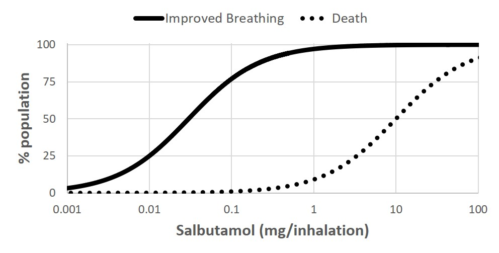
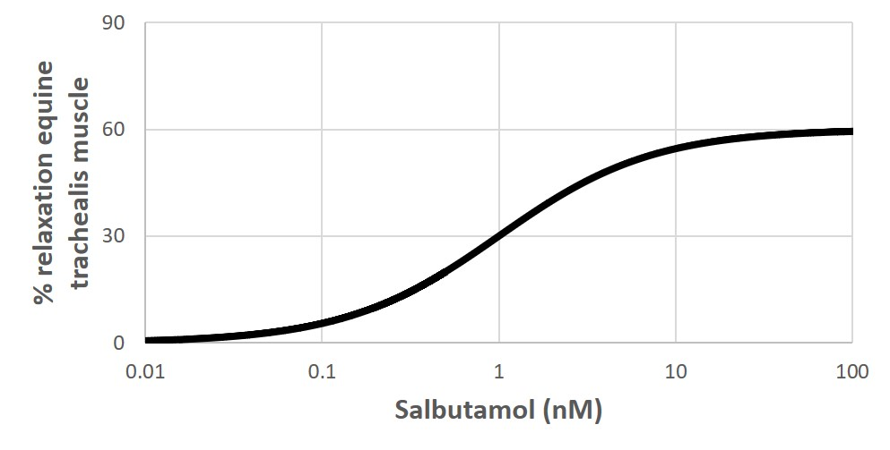
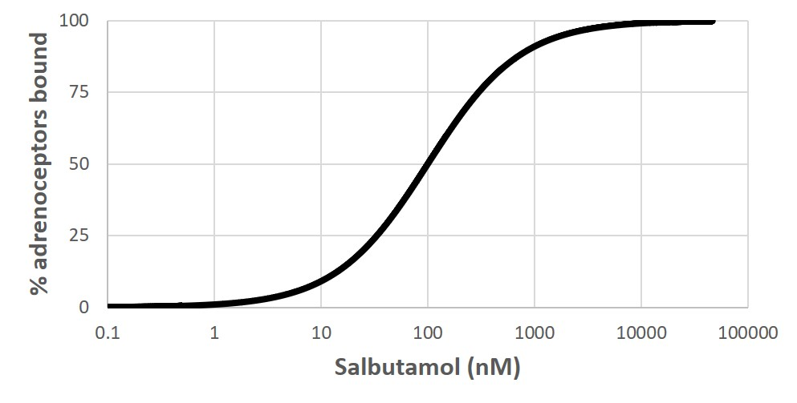

Whole exam · 21 questions · 8 with graphs · answer out loud, then tap
Basel 2020 Exam 4 · Q65Exam 4 lecture🔁 also 2018, 2023Which enzyme is common to all eicosanoid synthesis pathways?
A.5-lipoxygenase (5-LOX)
B.Phospholipase A2 (PLA2)
C.Prostaglandin-G/H-synthase 1 (PTGS1)
D.Prostaglandin-G/H-synthase 2 (PTGS2)
⬇️ Answer?
B. Phospholipase A2 (PLA2)
💡 Why + source
PLA2 is common to all eicosanoid pathways.
📖 LC28 S6
💗 TAP TO REVEAL
Basel 2020 Exam 4 · Q66Exam 4 lecture🔁 also 2023Selective inhibitors of prostaglandin synthase 2 (PTGS2/COX2) can cause which of the following negative side effects?
Basel 2020 Exam 4 · Q73not tested in 2026Mutated forms of which of the following proteins could be a viral oncogene?
A.APC
B.Bax
C.GSK-3
D.Ras
⬇️ Answer?
D. Rasdouble-check
💡 Why + source
Ras gain-of-function (can't hydrolyze GTP) is a classic viral oncogene.
📖 LC32 S25–S30
⚠️ Viral oncogenes are NOT tested in 2026 (Basel).
💗 TAP TO REVEAL
Basel 2020 Exam 4 · Q74Exam 4 lectureWhich of the following proteins catalyzes the breakdown of hydrogen peroxide to water and oxygen?
A.Catalase
B.Glutathione
C.Superoxide dismutase
D.Thioredoxin
⬇️ Answer?
A. Catalase
💡 Why + source
Catalase: H2O2 → H2O + O2.
📖 LC33 S14
💗 TAP TO REVEAL
Basel 2020 Exam 4 · Q75Exam 4 lectureWhich of the following might be a potential treatment targeted against hypoxic hepatocellular carcinomas?
A.Ebselen (an experimental drug that mimics GSH)
B.PFK15-584 (an experimental drug that prevents β-catenin induced transcription)
C.Q6 (an experimental drug that downregulates HIF-1α)
⬇️ Answer?
C. Q6 (an experimental drug that downregulates HIF-1α)
💡 Why + source
Hypoxic tumors rely on HIF → downregulating HIF-1α targets them.
📖 LC33 S24
💗 TAP TO REVEAL
Basel 2020 Exam 4 · Q76Exam 4 lecture🔁 also 2018Which signal pathway would you expect to be upregulated during reperfusion AFTER resolution of a transient ischemic event?
A.APC
B.ASK1
C.EGF
D.HIF-1α Use the following graphs to answer questions 13-21:[C:\Users\mbasel\Downloads\Graph 1.jpg][C:\Users\mbasel\Downloads\Graph 2.jpg][C:\Users\mbasel\Downloads\Graph 3.jpg]
Basel 2020 Exam 4 · Q77Exam 4 lecture🔁 also 2018, 2019, 2023The β2-adrenoceptor is a G-protein coupled receptor with a Gs pathway. What second messenger would you expect when the β2-adrenoceptor is activated?
A.Decreased [cAMP]
B.Increased [cAMP]
C.Increased [NO]
D.Increased [PIP3]
⬇️ Answer?
B. Increased [cAMP]
💡 Why + source
Gs → ↑ cAMP.
📖 LC27
💗 TAP TO REVEAL
Basel 2020 Exam 4 · Q78Exam 4 lecture
Use the salbutamol graphs (dose response, concentration response on equine trachealis, binding) to answer.
Salbutamol is a(n) _____________ of the β2-adrenoceptor.



A.Agonist
B.Competitive antagonist
C.Inverse antagonist
D.Non-competitive antagonist
⬇️ Answer?
A. Agonist
💡 Why + source
Salbutamol produces relaxation through the receptor = agonist.
📖 Graphs · LC29 S18
💗 TAP TO REVEAL
Basel 2020 Exam 4 · Q79Exam 4 lectureshort answerPlease estimate the EC50 of salbutamol, include the correct units. What does EC50 tell us?
Basel 2020 Exam 4 · Q82Exam 4 lectureshort answerPlease estimate the ED50 of salbutamol, include the correct units.
⬇️ Answer?
~0.03 mg/inhalation.
💡 Why + source
Improved breathing curve crosses 50% at ~0.03.
📖 Graph 1
💗 TAP TO REVEAL
Basel 2020 Exam 4 · Q83Exam 4 lectureshort answerPlease estimate the LD50 of salbutamol, include the correct units. What does LD50 tell us?
⬇️ Answer?
~10 mg/inhalation. Dose lethal to 50% of the population.
💡 Why + source
Death curve crosses 50% at 10.
📖 Graph 1
💗 TAP TO REVEAL
Basel 2020 Exam 4 · Q84Exam 4 lectureshort answerPlease estimate the therapeutic index of salbutamol, include the correct units. What does the therapeutic index tell us?
⬇️ Answer?
~300 (10 / 0.03 ≈ 333; unitless). Safety margin between effective and lethal doses; bigger = safer.
💡 Why + source
TI = LD50 / ED50.
📖 LC30 S17
💗 TAP TO REVEAL
Basel 2020 Exam 4 · Q85Exam 4 lectureshort answerPlease compare the KD and EC50 of salbutamol. What does this suggest? Explain why.
⬇️ Answer?
EC50 (~1 nM) is far below KD (~100 nM) → full response with only a small fraction of receptors bound → spare receptors (receptor reserve); signaling, not binding, is limiting.